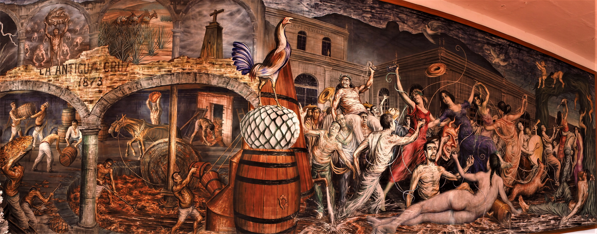
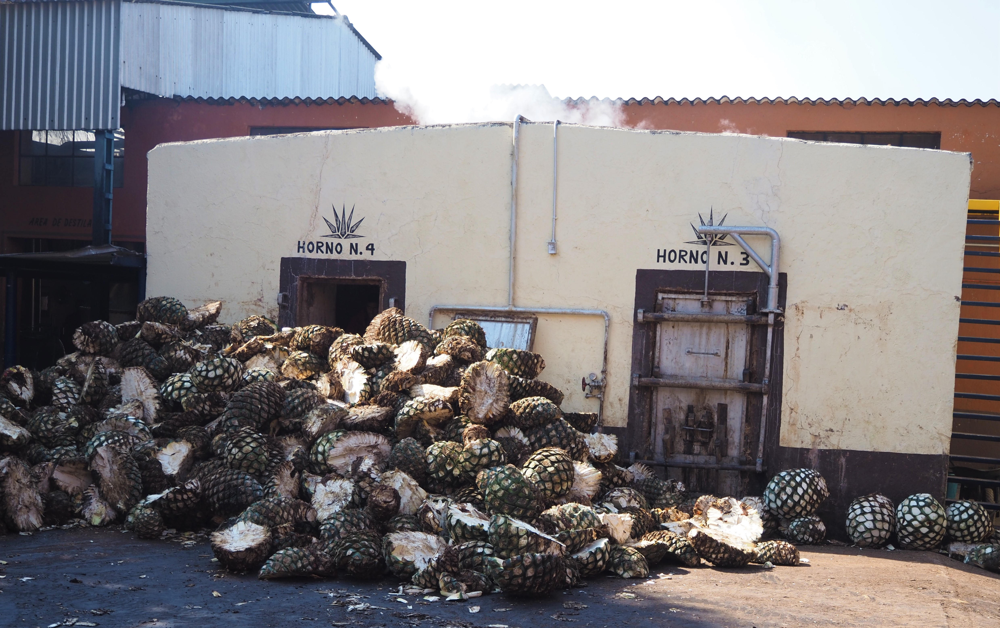

Visiting Tequila, Jalisco, Mexico
In early 2023, I went with my family to Tequila, Mexico for tequila tasting and sightseeing. I did a lot of research prior to going, mostly on Reddit and other individual blogs, and found they were of some help. I want to detail my experience so others can plan their trip. I can summarize my overall impression by saying, if you’re thinking about doing this, you should, it’s a great trip.
We flew from Tijuana, Mexico to Guadalajara. This is because my family lives in Southern California and it’s much cheaper to cross into Mexico and fly one of the Mexican domestic carriers than it is to fly from the U.S. For most people, this won’t be possible, but most major U.S. airlines fly to Guadalajara. The Guadalajara airport is nice and fairly large, and it was an easy trip from the airport into the city by taxi. We bought the taxi ride from a stand inside the airport, as you should always do in Mexico, rather than hailing a taxi from the curb. A few sources online suggested that Uber was not available at the Guadalajara airport, but when I signed on, there were a number of cars available. We used the taxi because the stand was right in the baggage claim area and it just seemed easier.
We were concerned about safety before we left, especially because a few days before the Mexican Government arrested the son of El Chapo, and armed conflict broke out between the cartel and the government in Sinaloa, especially in the city of Culiacan. That city is more than 400 miles from Guadalajara, and we never felt unsafe whatsoever during the day. At night we were advised not to walk around our neighborhood, Colonia Americana, so we didn’t venture farther than about four blocks from the hotel in the evening. One night we had dinner at Alcalde, which was pricey but fantastic, and took an Uber there and back even though it was only about one mile each way, within walking distance for us.
Guadalajara is an interesting and lively city, and it is worth staying a night or two there before heading to Tequila. We stayed three nights and that was probably one night too many. We had plans to see a rodeo, but all sporting events and some other public activities were canceled because of the violence. This was a one-off, unusual event, and not something that happens regularly. All the standard attractions in Guadalajara listed on other travel guides are worth visiting, so I won’t go into details about those here.
As far as I can tell, the vast majority of American tourists end up day-tripping from Guadalajara to Tequila. I think this is a mistake, as I really liked spending two nights in the town itself. The famous Jose Cuervo Tequila Train only runs on weekends, so we weren’t able to do that. From my research, the train takes people into the town, lets them visit the Cuervo factory, walk around town, then takes them back to Guadalajara. I much preferred having some time to spend in the town itself.
We took an Uber from near the center of Guadalajara to Tequila. It took about an hour and fifteen minutes, and cost us $60. Getting back from Tequila to Guadalajara is trickier because there are not a lot of Ubers in Tequila. We ended up hiring a driver through our guide, which cost us $100. There are two other options: hire a taxi in Tequila to Guadalajara, if possible. There are taxis in town, but I’m not sure they’d be willing to drive all the way back or how much it would cost. The other option is the bus which goes from the Tequila bus station, close to the main tourist parts of town, and stops at various stations in Guadalajara. The bus leaves every half hour or so all day, and costs only about $10 per person. This was our plan if we were unable to hire a car. The drawback of the bus is that it is slower than a car, and ends at the central bus station from which you’d have to take an Uber or taxi to your hotel. Also be forewarned: there is often substantial traffic leaving and returning to Guadalajara.
 The town of Tequila, near the main square.
The town of Tequila, near the main square.
The town of Tequila is small and walkable, and felt completely safe. There seemed to be a lot of Mexican tourists drinking and taking bus tours, but not many Americans. While there aren’t a ton of sights in the town per se, it’s just a nice place to walk around, hang out, and kill some time. There are distilleries/factories near the downtown area, and a ton of bars and shops; it’s kind of like a tamer version of walking the Vegas strip. If you want to go from shop to shop and bar to bar tasting tequila on the street, you’re in luck. Cantarito is the mixed drink of the moment, and seems to be quite popular among the locals and tourists. It’s made with tequila, citrus juice, and Squirt, and served in a clay cup. I prefer my tequila neat so tasting one cantarito was enough for me.
 “House” tequila in plastic jugs piling up in a bar.
“House” tequila in plastic jugs piling up in a bar.
We chose the Sauza tour for no other reason than it came recommended on Reddit. Orendain, Cuervo, and potentially others are possibilities. And again, each bar seems to have its own “house” tequila that you can taste. The Sauza tour was nice and we got free tequila drinks at the end. We made a reservation but some of them (maybe Orendain?) don’t require reservations. Cuervo is obviously the biggest operation and has a small village in Tequila that multiple people referred to as similar to Disneyland.
 Mural at Sauza celebrating Tequila.
My image of doing a “tasting” comes from wine tasting in California. I wanted to get outside of town, see the fields, and visit some smaller distilleries. It turns out, this isn’t really possible. The model is not the same as it is for American wineries. First, every distillery one is able to visit has an attached tour with a tasting, and in fact, you’re paying for the tour. Of course, after the first tour or two, you probably don’t need to do another one. But, the model in Mexico is that the tasting is secondary to the tour. It’s as if when wine tasting in Santa Barbara each winery had a tour of its production facilities then at the end allowed you to taste some of its wine. By the time we got to our last distillery, Tres Mujeres, we skipped the tour and went straight to the tasting. This may not be possible at all of the distilleries, however. We tried this at Cascahuin and the employees basically insisted we take the tour.
The distilleries themselves are not in the fields, like most wineries are, but are instead production facilities in the towns scattered throughout the region. The agave is shipped in from the fields to the facility, not made onsite like in an American winery. As a result, you’re basically driving into small towns to get to a storefront with a factory behind it. This model is fine, it’s just not how I conceive of “going tasting”.
Just like with wineries, there was variation in the price and quantity of tequila you are able to drink, and this also likely varies with your guide. We hired a guide to pick us up in Tequila, drive us to three distilleries, and drive us back to our AirBnb in Tequila, with a lunch stop along the way. This is probably the way to do it, and there are a ton of guide services listed online. They are all relatively expensive however, and I’m not sure it is possible to book something cheaper, for Americans anyway. I liked our guide a lot so please contact me for his information.
Is it possible to do tequila tasting outside the town without a guide? I don’t think so, for the following reasons. If you want to get out of Tequila, you need someone to drive you. There are no Ubers available in Tequila, though there are a lot of taxis. You could hire a taxi to drive you to one distillery, but then how would you get from that distillery to another distillery or back to Tequila? I suppose you could pay the taxi to wait, but at that point you’ve basically just hired a guide. Further, it’s clear the distilleries have relationships with guides. Some of them require reservations, which your guide should make for you, and others seemed to have bureaucratic requirements that mean a guide is necessary to do the tour and tasting. For example, at two of the three distilleries we went to, our guide gave us the tour and tasting, not an employee of the distillery. If you don’t have a guide, I’m not sure they will even allow you to do a tour and tasting. To be fair, every distillery has a slightly different production process, and the tour at Cascahuin was different enough from that at Cava del Oro that we still enjoyed it.
We specifically asked our guide to visit smaller, lesser-known tequila distilleries. In retrospect, it’s not clear there is any such thing. It is exceedingly difficult to determine which distilleries are available for tours and tastings using the internet. And, the same distilleries make a lot of different brands of tequila so even if you think you’re going to the distillery for a particular small-batch tequila, it’s likely it’s made by a bigger manufacturer. It seems that there are something like six or seven distilleries everyone goes to, and many of the smaller operations may not even be open for tasting.
 The piñas and ovens at Cascahuin.
We went to Cava del Oro, Cascahuin, and Tres Mujeres. Cascahuin seemed like the smallest and most artisanal of the three, but the other members of my group liked the tequila from Cava del Oro the best. They also had the most generous tasting experience, offering basically unlimited tastes of something like five tequilas and two mezcals. Tres Mujeres was a bit disappointing in that they only had two tequilas to taste. It was also obviously the biggest operation we visited, and while they had Instagram-ready views of the tequila fields and the cellars, it felt the most corporate and touristy of the three.
We bought at least one bottle from each of the distilleries. It’s interesting because every tequila or mezcal we had is available from stores in the U.S., based on google searches of the brand. This was surprising to me, but it actually makes sense–fancy tequila is mostly being sold in the U.S., not in Mexico. Though it is disappointing that we weren’t able to find an underground, unheard of tequila brand, the bottles from the distillery were anywhere from 30% to 50% cheaper than they are in U.S. stores.
 Tres Mujeres had the only views of blue agave fields from a distillery.
Tres Mujeres had the only views of blue agave fields from a distillery.
The rules about bringing liquor back into the U.S. are complicated, apparently, and we got stopped at the border after trying to declare our nine bottles. Keep in mind, we took the bridge from the Tijuana airport into San Diego, and the rules are different from those driving across or flying into the U.S. Ultimately, the customs agent told us not to do it again and let us through with our tequila. I wish I could offer advice on how much you’re allowed to bring back, but I am completely confused about what’s allowed and what’s not. I spoke to a friend later who tried to bring back whiskey from Canada and was also subjected to confusing rules. He was told at the border, that it depends on the agent’s discretion. I guess it’s too much to ask the U.S. Government to develop and post clear guidelines about bringing alcohol back through various crossings.
As we were driving through the towns, distilleries were going up everywhere. It’s clear the region expects an influx of tourists in the next few years, and everyone is trying to cash in.
A brief outline of our trip:
Three nights in Guadalajara
- Stayed at Rame Hotel Boutique
Two nights in Tequila
- Stayed at AirBnb
One night in Tlaquepaque, a suburb of Guadalajara
- Stayed at La Villa del Ensueno
Distilleries visited
Casa Sauza, in downtown Tequila
Cava del Oro, outside Tequila
Cascahuin, in Arenal outside Tequila
Tres Mujeres, outside Tequila
As I noted above, if one wanted to do this trip in fewer nights, one could do one or two nights in Guadalajara on the front end, two nights in Tequila, then straight back to the airport, or one night back in Guadalajara. I think two nights in Tequila is optimal because that gives you one day to arrive, walk around town and drink tequila, then another day to visit distilleries outside of town, leaving the next day. Everyone in my groups speaks decent Spanish, and we did one tour in Spanish (at Sauza), but it’s easy to find English-speaking guides. Almost everyone we encountered in the service industry in both Tequila and Guadalajara spoke some English.